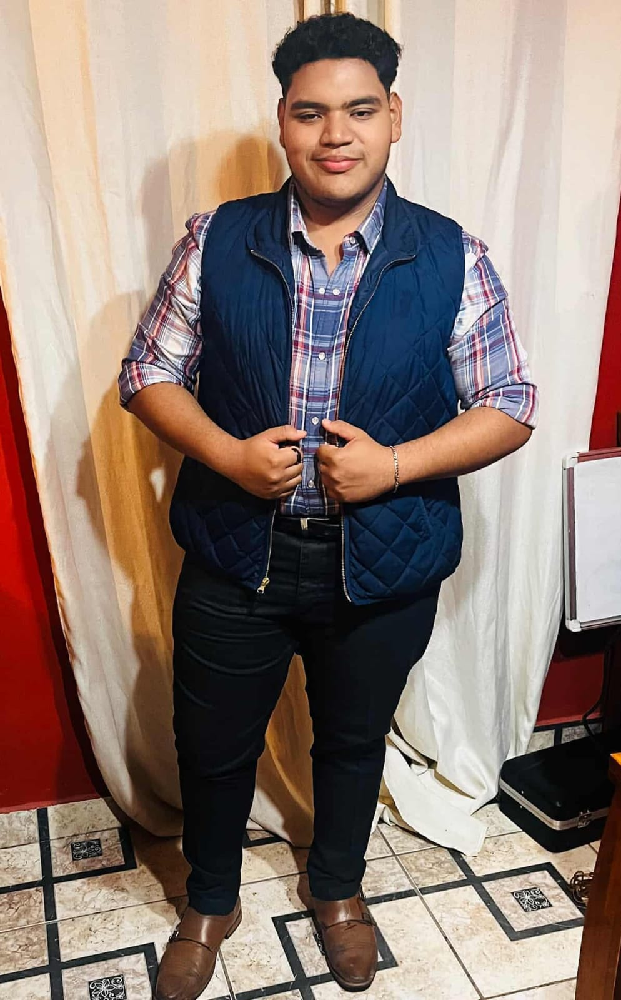

Portafolio personal
| |
Pagina principal |
Estudios |
Experiencia personal |
Proyectos destacados |
|
 | Hola mi nombre es Mario, soy estudiante de 12 de informatica en el instituto Marista La Inmaculada, Me encantan las artes tanto como la musica como la pintura En este portafolio saberas un poco mas de mi vida proyectos y demas actividades importantes que desarrollo en mi vida diaria Aqui les comparto un poco sobre mis 5 años vividos en el colegio y un poco sobre mi pequeña trayectoria musical Aquí tienes un texto de aproximadamente 400 palabras que puedes usar como parte de tu portafolio o presentación personal: --- Desde muy joven he sentido una profunda curiosidad por el mundo que me rodea. Siempre me ha gustado explorar, aprender y encontrar nuevas formas de expresar lo que pienso y siento. A lo largo de mi vida, he descubierto que mis mayores pasiones son la música, la pintura y la tecnología, tres mundos distintos que, de alguna manera, se complementan y forman parte esencial de quien soy hoy. La música ha sido una compañera constante en mi vida. No solo la escucho, sino que la siento como una forma de conexión emocional. A través de cada melodía encuentro inspiración, motivación y, muchas veces, claridad en momentos de duda. La música me ayuda a concentrarme cuando estudio y también me acompaña cuando necesito relajarme. Es una parte fundamental de mi rutina diaria y una fuente infinita de creatividad. La pintura, por otro lado, es mi espacio de libertad. Cuando tomo un pincel o comienzo a dibujar, puedo expresar emociones e ideas que a veces son difíciles de explicar con palabras. Me gusta experimentar con colores, formas y estilos, y dejar que mi imaginación fluya sin límites. Pintar me ha enseñado paciencia, atención al detalle y la importancia de disfrutar el proceso tanto como el resultado final. Actualmente soy estudiante de último año de informática, una etapa que representa un gran logro personal y académico. Elegí esta carrera porque siempre me ha fascinado cómo la tecnología puede transformar el mundo y resolver problemas reales. A lo largo de mi formación he desarrollado habilidades en programación, análisis y resolución de problemas, además de aprender a trabajar en equipo y adaptarme a nuevos desafíos. La informática no solo es mi área de estudio, sino también una herramienta que me permite crear, innovar y dar vida a ideas. Me considero una persona creativa, disciplinada y perseverante. Creo firmemente que la combinación entre arte y tecnología me brinda una visión única, donde la lógica y la imaginación trabajan juntas. Mi meta es seguir creciendo profesionalmente, continuar aprendiendo y, algún día, desarrollar proyectos que integren mis pasiones y generen un impacto positivo. Estoy emocionado por el futuro y por las oportunidades que vendrán, listo para enfrentar nuevos retos con entusiasmo y determinación. |
||||
Portafolio hecho por:Mario Rodriguez |